Someone just broke in.
Not into our server. Into our trap.
The attack returns: KARMA, a honeypot threat-deception platform
KARMA is a honeypot platform. It lures attackers into fake servers, reads every move they make, and locks them out.
Semester VI Diploma Major Project · Cyber Security & Engineering · The Oxford Evening Polytechnic
Breached since 2024: Salesforce, Coupang, Co-op, Jaguar Land Rover, Canvas.
Real headlines. Press → to walk through them.
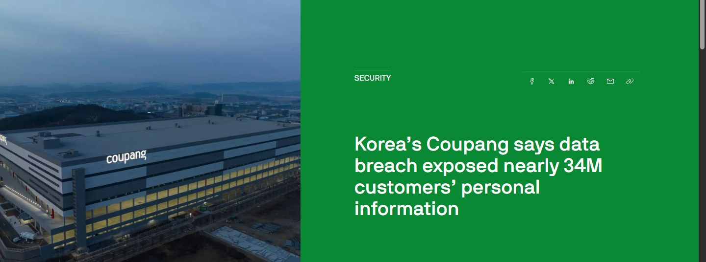
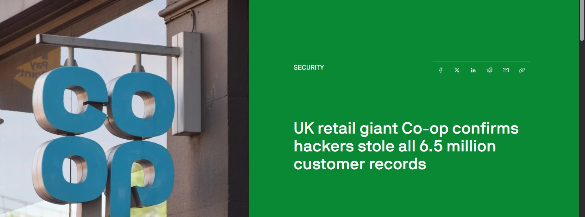
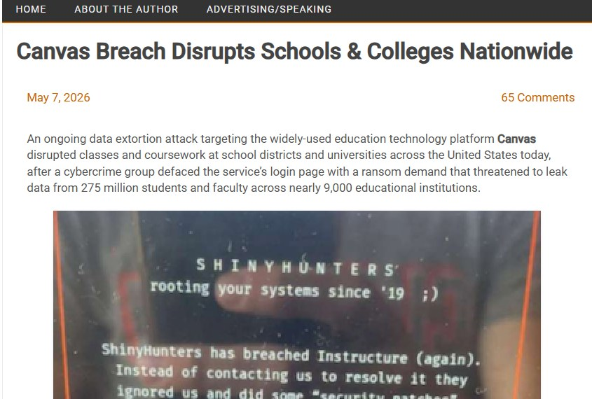
And here in India: Star Health, Tata Technologies, and 29 lakh more.
It is not somewhere else. It is the same week, the same country.
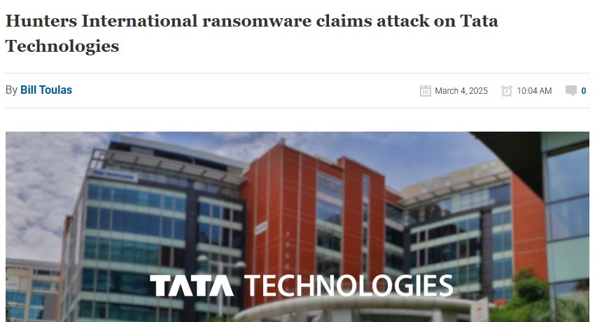
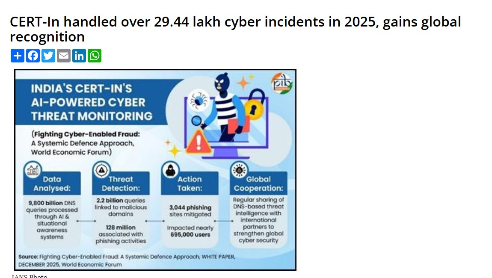
241 days inside before anyone notices.
That is the average time to identify and contain a breach. Each square is one day the intruder walks around unseen.
IBM Cost of a Data Breach Report 2025 · average cost of a breach: $4.44 million
Attackers bring keys.
A firewall checks the door. It blocks what it knows is bad. A stolen login, a trusted supplier or a ransomware loader looks good, so it walks straight in.
Verizon 2025 Data Breach Investigations Report · 12,195 confirmed breaches
Stop building walls. | Lay traps.
A honeypot is a decoy server that looks more valuable than the real one. Nobody has a reason to touch it, so anyone who does is an intruder.
A firewall
waits at the edge
blocks only what it already knows
thousands of alerts, most of them noise
sees nothing once they are inside
A honeypot
invites the attacker in
treats any touch as an attack
almost no false positives
records every move inside
Lure them in.
Let them touch the fake.
Read every move.
Lock the door behind them.
KARMA runs fake services that look real: an Ubuntu SSH server, a company web portal, an FTP file share full of tempting files.
The attacker aims at production, but the first thing they reach is the decoy. The real server is never touched.
Every command is logged, mapped to a MITRE ATT&CK technique and given a risk score from 0 to 100.
Cross a risk of 75 and KARMA quarantines the attacker. Every new attempt is refused and shown as BLOCKED.
KARMA
In security, karma is an attack that comes back to its sender. KARMA turns your own network into the trap.
What we set out to build.
One laptop that lures an attacker in, watches every move, names the technique and locks them out, live.
Out of scope: guarding a real production network, machine-learning detection, and multi-site deployment.
- 01Lure. Convincing fake services: SSH, web portal, FTP, Telnet and RDP.
- 02Record. Log every command and request, without anything running on the host.
- 03Classify. Name each action with MITRE ATT&CK and score its risk from 0 to 100.
- 04Contain. Quarantine high-risk attackers automatically.
- 05Explain. A live dashboard, attack map, phone alerts and an AI analyst.
Others do one part. KARMA does the loop.
Aimed at production. Landed in the trap.
A real recording of KARMA's live attack map. Every attack starts on course for the production server; the honeypot pulls it in.
Type what an attacker types.
root:x:0:0:root:/root:/bin/bash
These verdicts come from the same rules KARMA's engine uses.
Steal the keys. Trip the alarm.
nmap -sT -sV finds open portsrobots.txt and a forgotten TODO(dev) comment point to the file serverssh root@… -p 2222, any password, a fake Ubuntu shelldeploy.env and the AEGIS Word, Excel and PowerPoint filesContain mode blocks only high-risk acts. Observe mode never blocks, so the whole story can be rehearsed.
One console for the whole hunt.
A live dashboard
Every probe lands on screen the second it happens: counters, trend lines and the Contain or Observe switch.
Mapped to MITRE ATT&CK
Brute force becomes T1110, SQL injection T1190, a stolen key T1078: the language real SOC teams speak.
Honeytokens
A fake AWS key, admin URL and staging password, planted to be stolen. Using one sets off the alarm.
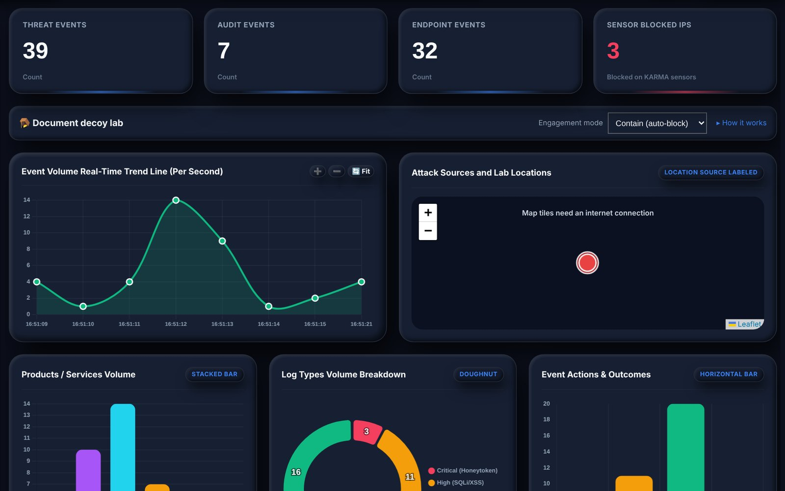
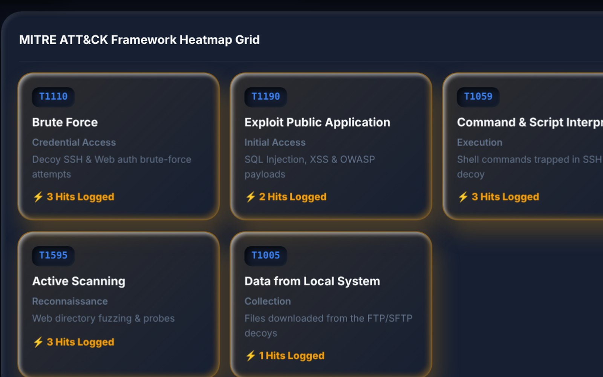
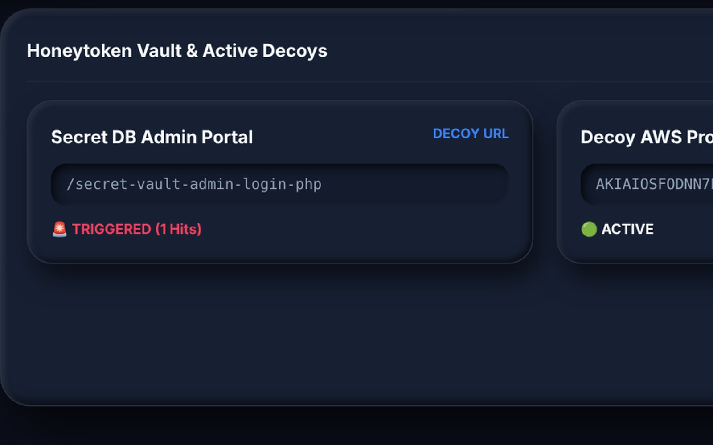
It watches, explains, and calls you.
Five decoy services
SSH, web, FTP, Telnet and RDP. All fake, all convincing; nothing an attacker types runs on the PC.
An AI SOC copilot
Ask “who is 192.168.137.5?” and get a forensic answer from live data, even offline.
Your phone buzzes
One push alert and e-mail when an attack starts, then silence while it runs. No spam.
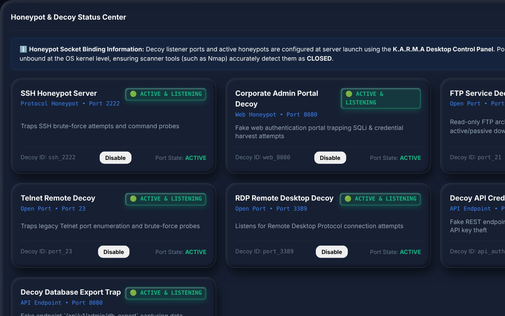
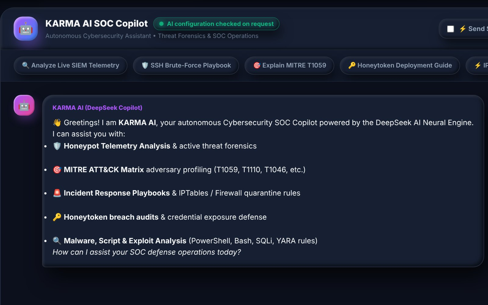
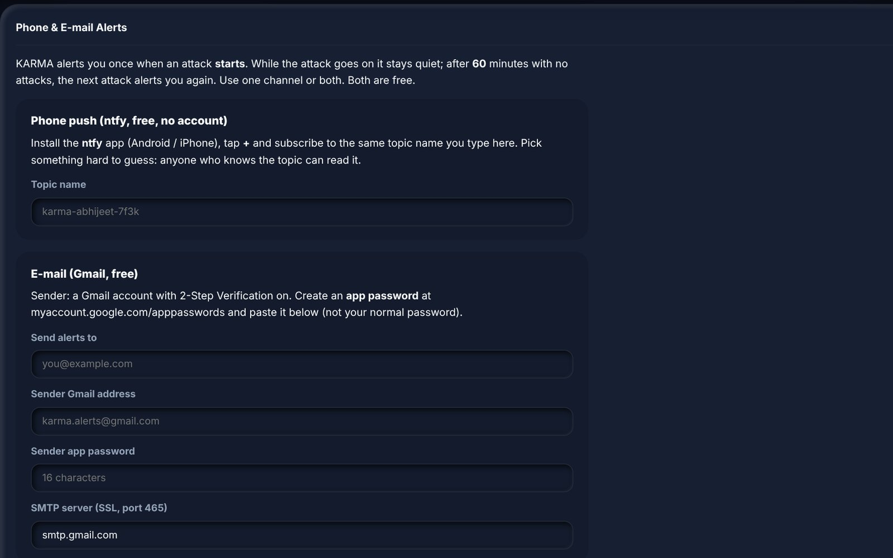
And everything around it.
Phishing analyzer
Drop in a .eml e-mail: headers, links and urgency tricks are scored Legitimate, Suspicious or Malicious.
Decoy documents
Macro-enabled AEGIS Word, Excel and PowerPoint files. The download itself raises an alert.
Launcher & tester
A desktop control panel picks the decoys; a built-in tester fires sample attacks at them.
One-click .exe
setup.py packs everything with PyInstaller. It runs on any Windows PC without Python.
A real HTTPS name
karma-honeypot.com on the KARMA PC, with its own trusted local certificate.
Reachable anywhere
A built-in tunnel gives the decoys a public address. The attacker installs nothing.
One keystroke, end to end.
whoami into what looks like a real Ubuntu serverwhoamiPress → to follow the packet.
Five layers, one Python process.
Interface
Vanilla JS, Chart.js charts, a Leaflet map. No framework, so it loads instantly.
Server
FastAPI on Uvicorn serves the API; WebSockets push live events; Pydantic checks every input.
Brain
The MITRE mapper and threat score judge each event; DeepSeek or an offline analyst explains it.
Traps
Paramiko SSH, raw-socket FTP, Telnet and RDP, a fake web portal and a virtual shell.
Memory
SQLite keeps every event; timestamped CSV segments keep an audit trail.
Built to be attacked.
A honeypot invites attackers in, so KARMA itself has to be hard to break.
Nothing runs
The shell is simulated: no programs, pipes, installs or host files. Sessions end after 15 minutes.
Console stays private
The dashboard answers only the KARMA PC, needs a 43-character admin token, and logs out after 8 hours.
Floods are capped
10 logins and 600 requests a minute per IP; 64 clients per decoy.
Secrets stay hidden
Captured passwords are blanked out of the logs; API keys live in a git-ignored .env.
Fourteen tests. All passed.
The system test cases from our project report, run against the live platform: every decoy, the detection engine, containment, the dashboard and the AI.
Automated checks also run on Windows and Linux for every change.
TC-01Risk score bands and capPASSTC-02MITRE mapping of six payloadsPASSTC-03SSH login and fake shellPASSTC-04Web injections and probesPASSTC-05FTP, Telnet and RDP decoysPASSTC-06Honeytoken URL and API trapsPASSTC-07Auto-quarantine, block, unblockPASSTC-08Burst of 25 rapid probesPASSTC-09CSV audit: one row per eventPASSTC-10REST API counts agreePASSTC-11Phishing e-mail flaggedPASSTC-12AI Copilot answer and fallbackPASSTC-13Dashboard refused from outsidePASSTC-14Decoy switched off and onPASSKARMA, counted.
Built by four students in one semester, and tested automatically on both Windows and Linux on every change.
Where it goes next.
Today
One laptop and one SQLite file, not a distributed SIEM.
Rule-based detection; a careful attacker can phrase around it.
Geolocation is city-level and approximate; VPNs show the provider.
Through the tunnel every attacker appears as 127.0.0.1.
Quarantine blocks KARMA's decoys, not the OS firewall.
One admin token, no user roles.
Future scope
Firewall integration: enforce quarantine in Windows Firewall or iptables.
Distributed sensors on many hosts, reporting to one KARMA server.
Scalable storage: PostgreSQL or Elasticsearch with retention.
Richer decoys: bigger fake filesystem, malware capture, SMB, MySQL, Redis.
Standard exports: Syslog/CEF, STIX 2.1; alerts to Telegram or Slack.
Smarter analytics: session clustering, anomaly detection, more ATT&CK techniques.
Local AI model, so no telemetry leaves the organisation.
Role-based access and a multi-tenant dashboard.
They came for our data. | We got theirs.
KARMA shows that one ordinary laptop can lure, profile and contain an attacker in real time: decoys, SIEM, MITRE mapping and active defence in a single Python process.
Every attacker who touches the trap leaves their IP, tools, commands and intent behind.
Thank you. Questions?
The honeypot is still running. Ask us anything.